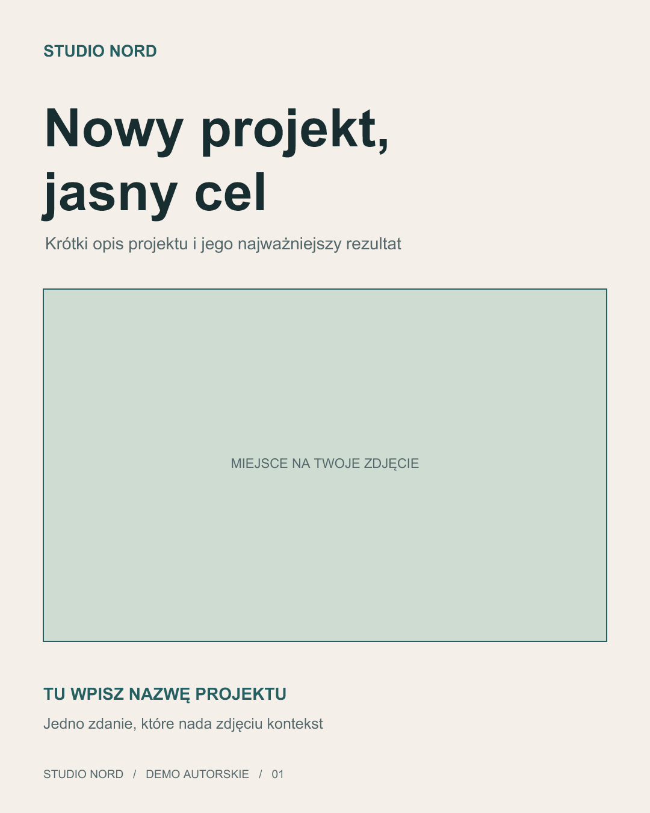
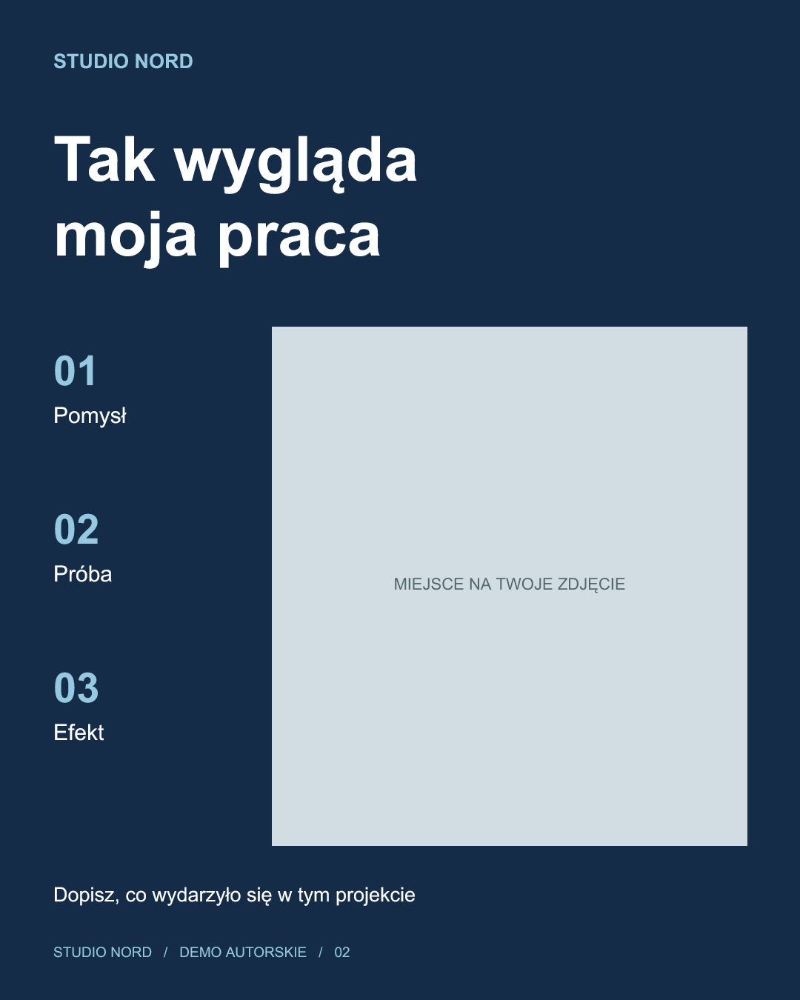
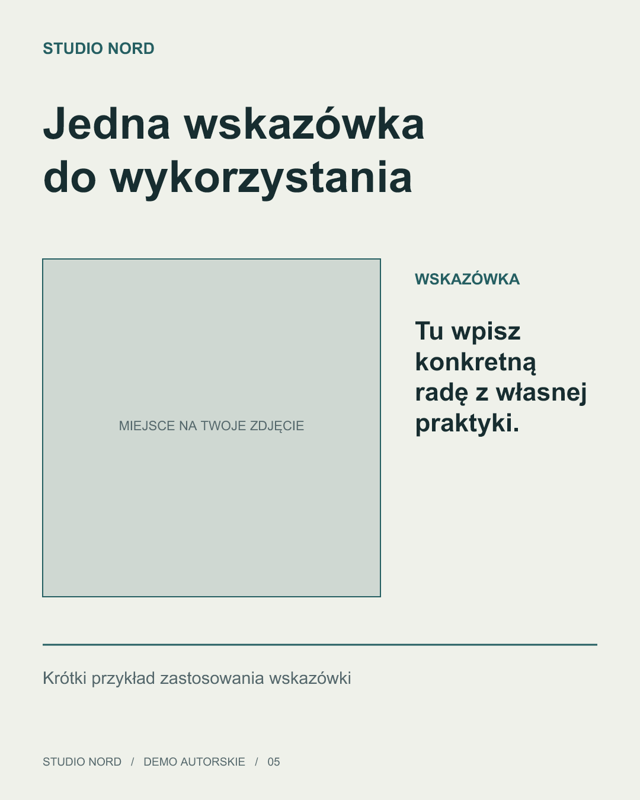
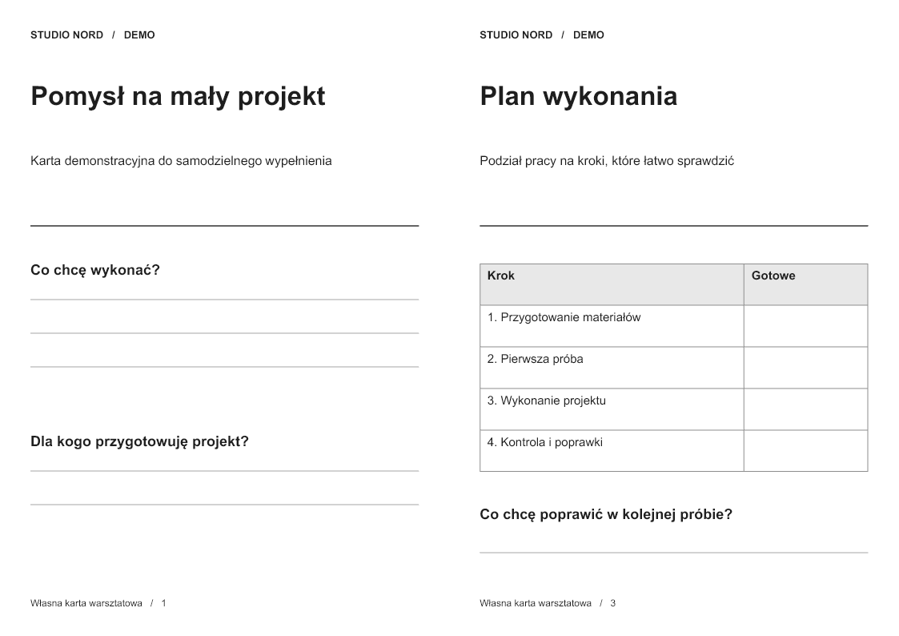
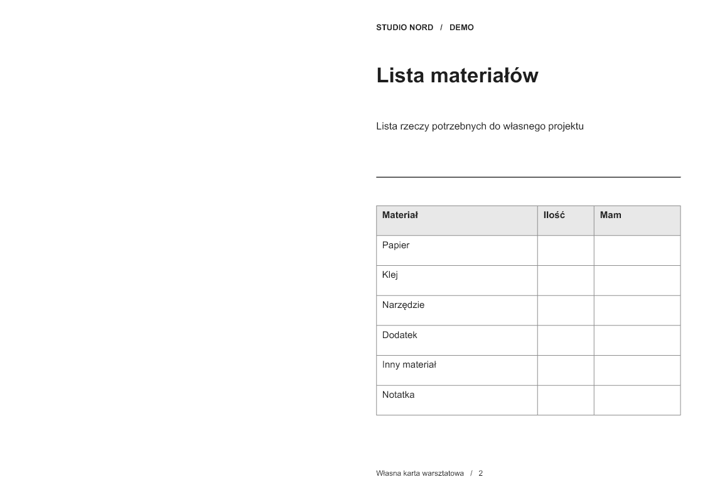

Własne demonstracje
Trzy rodziny materiałów
do importu w Canva
12 autorskich plansz, podglądy wszystkich stron oraz oryginalne pliki PPTX. Ta kolekcja pozwala obejrzeć materiał i pobrać źródła do importu.
Testy natywnej edycji tekstu, ramki zdjęcia i tabeli przeprowadzono w Canva 12 października 2026. Informacje o dokładnym zakresie testów znajdują się przy każdej rodzinie.
5 plansz
Szablony LinkedIn
Pięć własnych układów ze zdjęciami, typografią i polami treści. Plik PPTX służy do importu w Canva.



12 października 2026 w Canva edytowano i przywrócono natywny tekst oraz zastąpiono i przywrócono zdjęcie w ramce. Obserwowano kontrolę kadru.
2 plansz
Układ A4 do druku
Dwustronicowa autorska próbka A4 z tabelą i miejscem na informacje. W tylnej stronie lewa część pozostaje pusta zgodnie z założeniem układu.


12 października 2026 w Canva edytowano i przywrócono nagłówek oraz komórkę natywnej tabeli. Fizyczny wydruk dwustronny nie był sprawdzany.
5 plansz
Karuzela do social media
Pięć autorskich plansz „Przed drzwiami” pokazujących rytm karuzeli i prostą komunikację. Treść jest przykładem kreatywnym.
Zachowano zapisy pięciu stron zaimportowanego projektu w Canva oraz pięciu stron publicznego podglądu z 12 października 2026.
Źródła i charakter próbek
To autorskie demonstracje. Nie przypisujemy im historii płatnych klientów, wyników prowadzenia kont ani specjalistycznych kwalifikacji. Pliki PPTX zawierają natywne teksty i elementy oraz służą do importu w Canva. Ten adres udostępnia własny viewer podglądów.
Zewnętrzny publiczny adres udostępnienia używany wcześniej dla Canvy nie był dostępny podczas kontroli 13 października 2026. Obecna kolekcja udostępnia podglądy i pliki do importu, z jawnym historycznym dowodem natywnego testu.